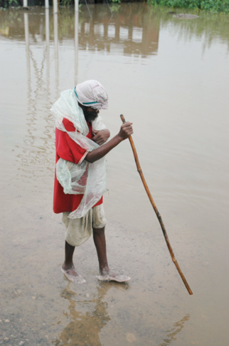

HİNDİSTAN, 3 Ağustos
Teoman’ın bir şarkısı dilimdeydi bütün gün. Sözlerini değil sadece nakaratını biraz değiştirdim. Paramparça / Sırılsıklam. Bugün bulduğumuz güzel otelin duşunda başladım söylemeye. Çadırda kalmak, evet güzel. Fakat insan bazen rahat ve büyük bir yatağı özlemiyor değil. Şarkı nereden çıktı peki? Sürpriz, yine yağmur yağdı. Bazen bir önceki günün notlarına karbon kâğıdı koysam olacakmış gibi geçiyor günler. Bir gün yayınlanma ihtimali olan bu notlarım, Hindistan’a ayırdığım sayfalara her gün aynı şeyleri yazdığım için basılmayacak diye korkuyorum.
Bugün yine ıslandık. Ama ben çok mutluyum. İnci her yağmur yağdığında şarkı söylemeye başladığım için tozuttuğumu düşünmeye başladı. Deliliğe vurdum diyelim. Nereden mi belli? İnek görünce irkiliyorum hâlâ, aman kazara çarpıp bir de hapse girmeyelim. Fare tapınağında farelerle aynı kaptan yemek de yemediğime göre aklım hâlâ yerimde.
Nasıl gülmeyeyim? Pakistan’daki bomba olayından sonra “Ne şans” deyip durmuştuk. Türkiye – Pakistan – bisiklet – bomba kelimelerini arka arkaya koyunca ne alakası var? Nasıl gelip burada bu olaya denk gelebildik ki? Hani yolculuk böyle bitseydi öteki dünyaya gitmek bir yana, arkamızdan “Yaa gördünüz mü biz söylemiştik, dinlemediler” denmesine daha çok üzülürdük.
Elbette birkaç dost da “Yahu hayalleri uğruna pedal çevirirken ayrıldılar hayattan, FB, GS şampiyon oldu diye balkonda otururken vurulmaktan
iyidir” diyeceklerdi elbet. Sağ olsunlar bunu diyecek bir kaç kişi bıraktık geride. Ama “Biz söylemiştik” grubu muhakkak yüzde 98 oranını yakalayacaktır.
İşte şimdi yine “Ne alakası var, ne şans?” lafları ağzımdan düşmüyor. Hindistan’daki otellerde televizyon bulmak mümkün, bizdeki gibi bol miktarda haber kanalı var. Çoğu İngilizce yayın yapıyor. Şu anda da karşımda biri açık. Haber kanallarını izliyorum, Hint filmleri hâlâ tebessüm ettiriyor. İlginç olan tıpkı filmlerdeki gibi reklamlarda da herkes birden dans etmeye başlıyor.
Pakistan’daki şanssız olaydan sonra, artık şansımızın döndüğüne inanıyoruz. Amritsar’dan giriş yaptığımızda, orta bölgeleri, biz Delhi ye yaklaştığımızda ise kuzey kentlerini sel vurdu. Bizi ıska geçti.
Muson mevsiminin tam ortasındayız. Amritsar’da havanın gün ortasında nasıl kahverengiye döndüğünü, yağışın tam bir cephe halinde adım adım ilerleyip şehri yutmasını ve beş on dakika içinde yerlerde birikerek yükselen akıl almaz su kütlesini otelin camından izleme şansımız olmuştu. Kesinlikle bizdeki yağışa benzemiyor, yağış yerden göğe doğru bir duvar gibi yaklaşıyor. Sonra yağdıkça yağıyor durmamacasına. Yüzgeçlerimizle pedal çevirmeye başlarız birkaç güne kadar.

Hindistan Varanasi
Muson yağmurlarına rağmen devam eden günlük hayat.
Ancak yolları kapatan, hayatı tamamen felç eden selden bir şekilde sıyrıldık. Rotamızdaki her yeri sel vurdu, ama ya biz gitmeden önce ya da gittikten sonra… Hindistan’ın coğrafi büyüklüğünü göz önüne alınca sel felaketinden etkilenen alanların, önünden ya da arkasından geçmiş olduk.
Hint Okyanusu’ndan gelen nemli hava, Tibet platosundan gelen kuru hava ve Himalaya yükseltilerinin etkisiyle bu bölgeye hem ölüm, hem hayat getiren yağmur, Muson.
“Ölümü gösterip sıtmaya razı etmek” denir ya, işte Türkiye’deki sel haberlerini gördükçe ıslanmamıza kızamıyoruz. Çok ıslanmamıza rağmen hava asla soğuk değil. Ölümlere yol açan ve “Gök delindi” denilen yağışlar bir şekilde bize denk gelmiyor. Ne şans!
Sırılsıklamız, bisiklete sırılsıklam aşığız, birbirimize sırılsıklam aşığız.
“Sırılsıklam” olmak çok güzel.

Hindistan, Delhi
Büyük Ruh, Büyük Öğretmen, Mahatma Gandhi.